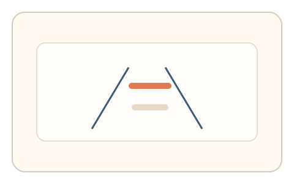
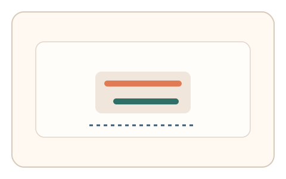

#138
E：双底座耦合 × 双信号 × 多阶段/双任务（认知偏置 + 生理/时域）
已扩展
错觉校准‑适应回弹
对齐错觉后短暂适应，再次校准并记录偏差回弹曲线。
概念原文
先进行错觉对齐，再经历短适应后重复校准，系统记录偏差回弹曲线并与个体基线比对。
用“错觉偏差的适应轨迹”区分人机。
研究背景
知觉适应会改变错觉偏差，回弹过程具有个体差异。通过前后校准的偏差轨迹可形成稳定的时域特征。
核心机制
- 进行一次错觉对齐校准并记录偏差。
- 短时适应刺激后重复校准。
- 记录偏差回弹曲线与稳定时间。
- 与个体基线或群体分布比对。
用户流程
- 步骤 1：用户完成错觉对齐。
- 步骤 2：经历短适应刺激后再对齐。
- 步骤 3：系统分析偏差回弹曲线。
判定信号
偏差回弹曲线
适应回弹具有稳定斜率与形态。
微调次数与时长
真实用户存在试探与回拉行为。
判定逻辑
回弹曲线需符合人类分布并具有自然微调；过快归零或无变化判异常。
对抗面
- 脚本固定偏差并直接输出
- 重放历史对齐轨迹
防御与缓解
- 随机化错觉类型与方向
- 变换适应时长与强度
- 加入噪声与多轮对照
可达性与风险
降低适应强度并提供简化图形，减少视觉负担。
- 适应效应弱导致曲线不明显
- 长时间任务引发疲劳
可视化状态

状态 1：错觉校准
基线错觉对齐。

状态 2：适应回弹
适应后偏差发生回弹。

状态 3：曲线判定
记录回弹曲线与稳定时间。
参考资料
Optical illusion
说明错觉导致的知觉偏差。
Sensory adaptation
说明适应与回弹特性。